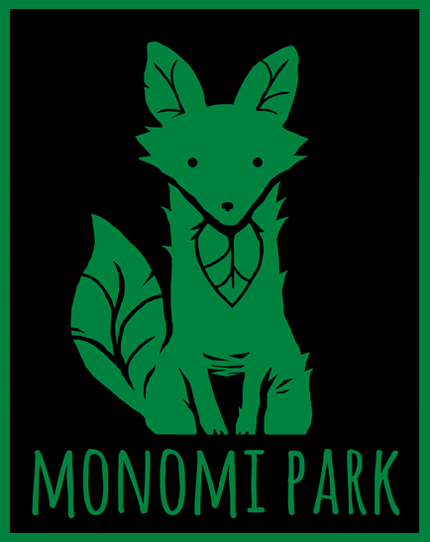
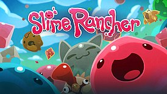

Slime Rancher (с англ. — «Слаймовод») — компьютерная игра-симулятор от первого лица на движке Unity в открытом мире с элементами
приключенческого боевика, разработанная и выпущенная компанией Monomi Park. В январе 2016 года игра была доступна для покупки в раннем
доступе Steam. Полная версия вышла 1 августа 2017 года на Windows, macOS, Linux, и Xbox One[1]. Версия игры для PlayStation 4 была выпущена 21
августа 2018 года.
В далеком будущем мегакорпорация "7Zee" нашла новый источник дохода в виде невероятного ресурса, плорта — концентрированного кусочка слизи обладающего различными свойствами, производимого слаймами — студенистыми живыми организмами различных видов и характеристик[2][3][4][5], населяющих отдалённую планету Беспредельное Запределье. Плорты ценятся за возможность производить из них огромное разнообразие товаров: от продуктов питания и сплавов, до ювелирных украшений и удобрений. И казалось бы, в чём проблема забрать с Запределья нужных слаймов, чтобы на Земле производить сколько угодно ценного ресурса. Да только загвоздка в том, что слаймы могут существовать лишь на своей планете, где у них есть всё необходимое. Тогда мегакорпорация «7Zee» решает устроить по всей планете ранчо слаймов, чтобы контролировать производство плортов, и нанять слаймодов для обслуживания этих ранчо.
Игрок управляет персонажем по имени Беатрикс ЛёБо — отважным молодым слаймоводом. Девушка решает провести всю оставшуюся жизнь на Беспредельном Запределье — планете, находящийся за тысячу световых лет от Земли. И вот проснувшись от продолжительного сна, игроку вместе с ней предстоит обустраивать ранчо, доставшееся от бывшего владельца Гобсона Твиллгерса, чьи заметки походу игры можно будет найти по всей карте, изучать окружающую среду планеты, собирать, кормить и разводить слаймов[2][3][4][5]. Также по Звёздной почте с Беатрикс время от времени будет связывается её земной близкий друг Кейси, от которого можно будет узнать много нового о прежней жизни героини. Основной экономический аспект игры связан с кормлением слаймов соответствующими продуктами питания, чтобы они производили плорты, которые затем могут быть проданы в плортмаркете в обмен на ньюбаксы — валюту, необходимую для покупки улучшений на оборудование ранчо или на фермерские здания. Скармливая слаймам их любимую еду, можно получить по 2 плорта за раз. Путешествуя по миру игры и исследуя разные локации, обновляя при этом карту, игрок может собирать новых слаймов, еду для них и другие ресурсы, засасывая их своим вакпаком (что-то вроде большого и мощного пылесоса с 4 отсеками и позднее отсеком для пресной воды). Чтобы держать слаймов на своём участке, игрок должен покупать и модернизировать загоны для собранных слаймов. Различные виды слаймов могут быть объединены и развиты путём скармливания нужному слайму, чужеродного плорта. 